血战麻将
一、游戏规则
1、牌数：麻将“筒”、“条”、“万”共108张
2、玩家胡牌后，其余玩家继续游戏，直到流局或只有一位未胡牌玩家为止
3、胡牌时，手牌最多只有2种花色，否则不可以胡牌
4、坐庄规则：上一局最先胡牌玩家当庄，如一炮多响则点炮玩家为庄，流局则庄家的下家当庄
5、可碰、可杠、不可吃、可点炮、可自摸
6、流局时查叫：即未叫玩家要赔偿有叫玩家最大可能番数，查花猪玩家（含三种花色牌）需赔偿全部玩家4番（封顶范围内）或封顶番的积分，未叫玩家的刮风下雨不算分
二、术语解释
1、换三张：游戏开始时，玩家需要选中3张同花色的牌与其他玩家随机交换
2、定缺：摸牌结束后由玩家选择一种花色作为该局游戏定缺的花色，游戏中必须优先打该花色的牌（不能碰不能杠），除了其他花色牌的碰杠
3、刮风（明杠）：分为直杠和面下杠（巴杠）
直杠：玩家手中有三张一样的牌，其他玩家打出此牌，该玩家选择杠，收点杠玩家2积分
面下杠：玩家已经碰出一对牌，又自摸到碰出的牌选择杠，收未胡牌玩家1积分，此时可以被其他玩家抢杠胡，若抢杠胡则此杠不结算
4、下雨（暗杠）：玩家手中含有4张相同的牌（未碰），此时玩家选择杠。暗杠不可被抢杠胡，收未胡牌玩家2积分
5、过手胡：在某一回合中，若有人点炮，玩家没有胡，则此回合有其他玩家点炮，只要没有加番就也不能胡，自摸除外。当玩家摸牌，碰牌，杠牌后，过手胡限制解除
6、查大叫：流局时没叫的玩家赔给有叫的玩家最大可能的番数（封顶范围内）
7、自摸：玩家自摸胡牌时，赢得其他未胡牌的玩家积分
8、呼叫转移：开杠的人在杠上点炮后，杠钱要一并转移给接炮的人。如果杠不结算则不转移，如点炮玩家为查叫玩家
9、杠上开花：点杠杠上开花算点炮与自摸有两种玩法选项。巴杠和暗杠杠上花算自摸三家
三、胡牌类型
1、平胡（0番）：四坎（除4副刻子）加一对将
2、对对胡（1番）：四副刻子加一对将
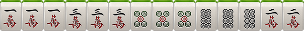3、清一色（2番）：全部是一种花色的平胡
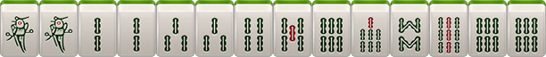4、七对（2番）：玩家手牌都是对子，没有碰和刮风下雨
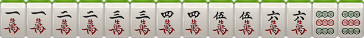5、龙七对（3番）：特殊的七对，只是7对中含有4张相同牌且没有杠出
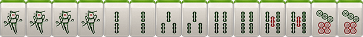6、清对（3番）：清一色+对对胡
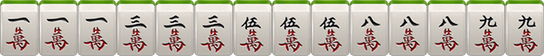7、清七对（4番）：清一色+七对
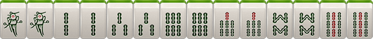8、清龙七对（5番）：清一色+龙七对
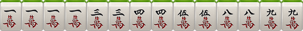9、全幺九（3番）：所有牌中，全部是1或者9组成的一句话、刻子、将牌
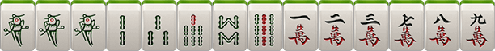10、将对（3番）：所有牌中，全部是2.5.8组成的对对胡
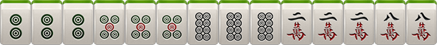11、将七对（4番）：所有牌中，全是2.5.8组成的龙七对
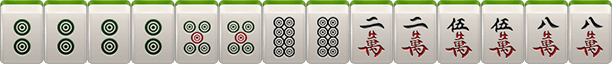12、门清（1番）：胡牌时，没有碰过牌，没有明
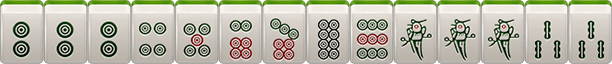13、中张（1番）：胡牌时，牌型中不包括1个9
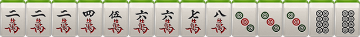四、番计算
1、番=底金X2
例如：底金为1分，0番（前提是胡了）=1分，1番=1*2=2分，2番=1*2*2=4分，3番=1*2*2*2=8分
2、基本输（赢）积分=番数+刮风下雨+自摸加底（自摸加番玩法则算在总番里）
3、点炮结算方式为1对1，自摸结算方式为1对多
4、另加番
根：+1番，所有牌中有4张一样的牌，（无论是碰、杠），可累计计算
杠上开花：+1番
杠上炮：+1番
抢杠胡：+1番
扫底胡：+1番 （牌墙最后一张牌自摸或点炮胡）
金钩胡：+1番（剩余一张牌单钓）
海底炮：+1番（牌墙最后一张牌点炮胡），且非必须打出
天胡：+3番（庄家起手胡牌）
地胡：+2番 （闲家待庄家出完第一张牌后，自摸一张胡牌）
备注：各个牌型不重复计算，只收取最大番，且总番数不超过所选的封顶番数
长沙麻将
一、长沙麻将
长沙麻将增加了四喜、板板胡、六六顺、缺一色、天胡、地胡牌型
二、牌数
共108张：筒、索、万、不带东、南、西、北风、中、发、白
三、摸牌规则
游戏开始，庄家得14张牌，闲家得13张牌。庄家从牌中选1张丢出，闲家有权要那张丢出的牌。庄家的下家，有权吃碰杠胡。其它两家则只可碰杠胡，"胡"比"碰"与"杠"优先，"碰"与"杠"比"吃"优先
四、基本牌型
1、
2、
3、
4、
5、
注:1对(22)是将牌，长沙麻将需要2、5、8做将，比如2万、5条、8筒等，某些牌型则将可以为任意1对
五、胡牌类型
1、小胡
（1）、大四喜: 起牌后，玩家手上已有4张一样的牌，即可胡牌 (四喜计分等同小胡自摸)

（2）、板板胡: 起牌后，玩家手上没有一张 2、5 、8 (将牌)，即可胡牌(等同小胡自摸)

（3）、缺一色: 起牌后，玩家手上筒、索、万任缺一门，即可胡牌(等同小胡自摸)

（4）、六六顺: 起牌后，玩家手上已有 2 个刻子(刻子：3个一样的牌)，即可胡牌(等同小胡自摸)

（5）、平胡: 2 、5 、8 作将，其余成刻子或顺子，即可胡牌

2、大胡
（1）、碰碰胡：1万1万1万、1筒1筒1筒、7筒7筒7筒、 3条3条3条、 7条7条，乱将，即表示任意数字的牌都可以做将，可以是2、5、8牌做将，也可以是1、3、4、6、7、9牌做将，可碰、杠、自摸

（2）、将将胡：玩家手上每1张牌都为 2 、5、8 ，玩牌过程中可碰牌

（3）、清一色：同一种花色的牌组成，任意一种胡牌规则皆可，可吃、可碰、可杠，如果还满足其它规则的大胡，则在原有大胡基础上叠加

（4）、海底捞月：最后一张牌为海底牌。海底胡牌为大胡，需要将(将的种类根据当前牌型决定)
（5）、海底炮：如果A玩家要了海底牌，而又不能胡牌，必须打出；B玩家没有要海底牌，而又胡这张海底牌，即为B玩家胡牌。同时，如果C玩家和D玩家也能胡，则通胡
（6）、七小对：任意花色组成的七对牌

（7）、豪华七小对：手中任意七对牌，其中有4张一样的牌，但不能杠，算2个大胡的分，即12分

（8）、杠上开花：玩家有4张一样的牌，即可选择开杠(听牌的情况下)。开杠要补2张牌，补张的牌被开杠者胡则为杠上开花，算大胡
（9）、抢杠胡：暗杠不能抢杠胡,只有明杠可以抢胡。玩家在明杠的时候，其他玩家可以胡被杠的此张牌，叫抢杠胡
（10）、杠上炮：开杠者补2张牌，补张的牌开杠者不能胡，而其他玩家可以胡，则属于杠上炮
（11）、全求人：吃、碰、补张以及杠后只剩一张(熟称单调)由别人打出或者自己摸到相同牌张即可胡牌
（12）、双豪华七小队：手中任意七对牌，其中有2组4张一样的牌，但没有杠。算3个大胡的分，即18分
六、庄家分配
1、第一局由创建房间者为庄家
2、以后谁胡牌，下局谁做庄
3、如果出现通炮情况，则下轮由放炮玩家当庄家
4、如果有人要了海底牌后却没人胡则要海底牌的玩家下局当庄家
5、如果四个玩家都不要海底牌，则下轮由第一个可以选择海底牌的玩家当庄家
6、如果此局无海底牌（即海底牌被补张），则补海底牌的玩家下局当庄家
七、抓鸟
抓鸟在胡牌后进行，由胡牌方进行（一炮多响时由点炮玩家进行），此时从牌堆上取创建房间时选得鸟数张牌，其中鸟牌以胡牌方为第1序位，当鸟牌的序数为159时，为胡牌方A的鸟牌，26为胡牌方的下家B的鸟牌，37为胡牌方的对家C的鸟牌，48为胡牌方的上家D的鸟牌。例如自摸胡牌方中鸟1个，则其他人多输1分，且庄家中鸟输赢多一分
八、特殊规则
1、通炮：即几个玩家可胡同一张牌，此牌即为通炮
2、补张：
A 、补张后可胡牌，算作自摸
B 、补张从最后一叠牌的上张拿，再拿下张，一次一张，依此类推，不可随意选择
C 、如果补张时只剩下海底，则补海底牌，此局则无海底牌
3、海底牌漫游：即玩家可选择是否要海底牌，按照座次轮询
4、漏胡：如果玩家漏掉了炮胡，则在玩家摸牌前禁止炮胡，摸牌后一切正常，只对该玩家有效，其他玩家正常
5、杠牌后只能由系统从最后面的牌中获得，如果玩家因为补张的牌胡了算杠上开花，如果没胡则必须打出该补张的牌，如果有其他玩家胡了打出的该补张牌则算杠上炮，属大胡。而且一旦开杠后摸进任何牌“开杠者“如果不能胡则必须打出，直到胡牌或放炮为止。开杠打出的2张牌如果没人胡可以进行吃碰杠补操作
九、计分规则
1、小胡自摸：每人输2分，总得分2*3=6分；庄家自摸，每人输3分
2、小胡接炮：点炮方输1分，总得分=1分；庄家接炮，点炮方输2分
3、大胡自摸：每人输6分，总得分6*3=18分；庄家自摸，每人输7分
4、大胡接炮：点炮方输6分，总得分=6分。庄家接炮，点炮方输7分
注：
1) 小胡和小胡之间能累计计算（如四喜+小胡）
2）小胡和大胡之间累计计算
3）大胡之间可以累计计算（算加法）如：七小对＋清一色
4）多种牌型累计计算时，庄闲、抓鸟只计算一次胡牌类型，如胡牌为自摸杠上开花一次(6分)、将将胡（6分），并同时为庄（1*3分）且庄家中2鸟（2*3分），即总分为45分
红中麻将
一、红中麻将
红中麻将打法简单、节奏快速、极易胡牌
二、牌数
红中麻将，共108张：筒、索、万、不带东、南、西、北风、中、发、白
三、摸牌
游戏开始，庄家得14张牌，闲家得13张，庄家从牌中选1张丢出。其它3家有权要那张丢出的牌，只能胡、碰、杠，胡比碰杠优先，不能吃
四、胡牌规则
1、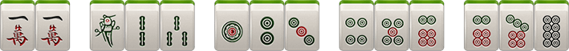
2、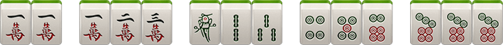
3、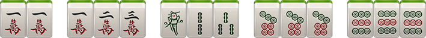
4、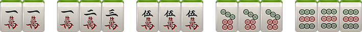
5、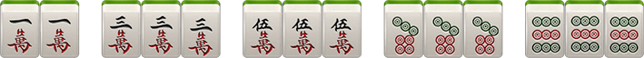
6、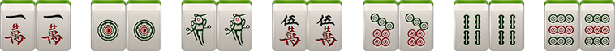
五、关于杠
1、明杠
A、手上有3张相同的牌，其他玩家打了第4张相同的牌即可开杠。举例：手上有3个一万，其他玩家打了个一万，则可开杠，如果没有流局，则放杠者出分。
B、碰牌之后，自己又摸了1张相同的牌即可开杠，举例：碰了一万，自摸个一万，则可开杠
2、暗杠
手上抓了四张相同的牌，就是暗杠
六、庄家分配：庄闲输赢多一分
1、第一局由创建房间者为庄家
2、以后谁胡牌，下局谁做庄
3、如果出现通炮情况，则下轮由放炮玩家当庄家
七、积分规则
1、自摸
每人输2分，胡牌玩家赢6分，如庄家自摸，闲家每人输3分
2、小胡接炮
点炮方输1分，胡牌玩家赢1分，如点炮方为庄家，则庄家多输1分，如接炮方为庄家，点炮的闲家多输1分
3、开杠
A、暗杠相当于自摸，每人出2分
B、碰牌之后，再抓上1个所碰的牌开杠，每人出1分
C、手抓了3个相同的牌，然后有人打了1个相同的牌，开杠的话，放杠者出3分
注：杠牌后如果流局依然算杠分
八、特殊规则
1、通炮：即几个玩家可胡同一张牌，此牌即为通炮
2、漏胡：如果玩家漏掉炮胡，则该玩家摸牌前禁止炮胡，摸牌后正常；只对该玩家漏胡，其他玩家正常
九、红中赖子
红中特殊规则:
1、除了万，条，筒, 多了红中(共计112张牌)
2、红中在手中可以做万能牌使用
3、红中不能碰，不能杠
4、红中不能和其他牌组合碰杠。比如：1万1万红中，别人打1万，是不能杠一万的
5、起手4个红中可以直接胡
十、抓鸟
1、一码全中：即只抓一张牌，根据牌面的数字中几个鸟，如抓到8筒，即中8个鸟，抓到红中则中9个鸟
2、正常抓鸟：在胡牌后进行，由胡牌方进行（一炮多响时由点炮玩家进行），此时从牌堆上取创建房间时选得鸟牌张数，其中包含159（勾选红中赖子玩法时，抓鸟抓出红中算1）牌的个数既为中鸟个数，例如自摸中鸟1个，则最终赢得分数为6+3=9分
斗地主
一、发牌
一副牌54张，3张为底，剩余牌依次分发给3家，每家17张牌，底牌在确认地主后所有玩家均可看
二、叫牌、确认地主
开房第一局由房主叫地主，之后由赢的玩家叫地主，若出现农民赢，则随机一个农民。叫地主倍数为X1或X3，抢地主抢到X4或X12倍的玩家直接为地主。如果所有玩家选择了“不叫”，则牌局不变，重新发牌
将三张底牌交给地主，并亮出底牌让所有人都能看到。地主首先出牌，然后按顺序依次出牌，轮到用户跟牌时，用户可以选择“不出”或出比上一个玩家大的牌。某一玩家出完牌时结束本局
三、牌型
火箭：即双王（大王和小王），最大的牌
炸弹：4张相同数字的牌（如:四张7）
单牌：单个牌（如红桃5）
对牌：数值相同的两张牌（如梅花4+方块4）
三张牌：数值相同的三张牌（如三个J）
三带一：数值相同的三张牌十一张单牌或一对牌。例如：333+6或444+99
单顺：五张或更多的连续单牌（如：45678或78910JQK）。不包括2点和双王
双顺：三对或更多的连续对牌（如：334455、7788991010JJ）。不包括2点和双王
三顺：二个或更多的连续三张牌（如：333444、555666777888）。不包括2点和双王
飞机带翅膀：三顺+同数量的单牌（或同数量的对牌），如：444555+79或333444555+7799JJ
四带二：四张牌+两手牌。（注意：四带二不是炸弹），如：5555+3+8或4444+55
四、牌型大小
火箭最大，可以打任意其他的牌
炸弹比火箭小，比其他牌大。都是炸弹时按牌的分值比大小
除火箭和炸弹外，其他牌必须要牌型相同且总张数相同才能比大小
单牌按分值比大小，依次是大王>小王>2>A>K>Q>J>10>9>8>7>6>5>4>3，不分花色
对牌、三张牌都按分值比大小
顺牌按最大的一张牌的分值来比大小
飞机带翅膀和四带二按其中的三顺和四张部分来比，带的牌不影响大小
五、胜负
地主、农民中任意一家先出完所有的牌谁获胜
六、算分规则
底分1
“抢地主”×2
炸弹翻倍
斗牛
一、游戏庄家与倍数
抢庄：
满人开始后随机抢庄，点过抢庄的人有机会成为庄家，在玩家中选择财富最多的玩家为庄，若财富相同则随机分配庄家。如果都没人抢庄，随机选择一个玩家进行坐庄。
倍数：
系统发5张牌，先显示前3张牌，闲家进行倍数选择，选择倍数后再显示后两张牌，选择的倍数将影响输赢结果的大小，所有比牌均是庄家与闲家比牌。倍数选择：5倍、10倍、20倍、50倍
二、牌型介绍
五小牛：手上牌均小于5点，且总和小于10点
五花牛：手上全为JQK
四炸：5张牌有4张相同
牛牛：选出3张牌相加为10或20或30，剩余2张牌相加为10或20或30
牛九-牛二：选出3张牌相加为10或20或30，剩余2张牌相加为9-2
牛丁：选出3张牌相加为10或20或30，剩余2张牌相加为1
没牛：5张牌任意3张牌相加不能成为10或20或30
三、牌型大小
（1）牌型：
五小牛>五花牛>四炸>牛牛>牛九>牛八>牛七>牛六>牛五>牛四>牛三>牛二>牛丁>没牛
（2）点数：
K>Q>J>10>9>8>7>6>5>4>3>2>A
（3）相同牌型：
庄闲家牌型一样大小时，依次比最大一张牌，最大一张牌一样，则按花色比较：黑桃>红桃>梅花>方块
（4）牌型倍数：
五小牛8倍
五花牛6倍
四炸5倍
牛牛4倍
牛九3倍
牛七、牛八2倍
其他牌型均为1倍
四、特殊牌型
（1）四炸：5张牌有4张相同，若庄闲两家都是四炸，比较4张一样牌的大小
（2）五花牛：若庄闲两家都是五花牛，则比较最大一张牌的大小
（3）若5张牌既符合四炸又符合五花牛，或满足五小牛和四炸，按最大牌型算
五、结算规则
闲家赢牌金币数=(房间底注*所压倍数）*闲家牌型倍数
闲家输牌金币数=(房间底注*所压倍数）*庄家牌型倍数
庄家赢牌金币数=闲家输牌金币总和
六、出牌规则
支持系统计算牌型出牌与玩家自选牌型出牌，若5秒内未自选牌，则默认系统牌型出牌。若玩家自选牌型，无论是否为最好的牌型，都按玩家自选的牌型大小算
广东麻将-推倒胡
一、麻将规则
推倒胡不许吃牌只许自模，打法简单节奉快速，无大胡
二、牌数
本游戏提供带风玩法，带风为136张
三、玩法
不许吃牌，可以碰牌、杠牌，不许吃胡只能自摸
四、鬼牌
鬼牌：万能牌，可以当做任意一张牌使用，白板做鬼，不可与其他牌组合碰杠
白板做鬼：
在广东地区，白板被称作棺材板，采用白板做鬼
五、庄家
第一局开启房间的玩家坐庄，如果庄家胡牌则继续坐庄，如果闲家胡牌，则胡牌的玩家坐庄，流局则上一局庄家继续坐庄
六、胡牌牌型
任意牌凑成一对再加上4组顺子(三张相连的牌)或者刻子(三张一样的牌)或者顺子与刻子混合的牌型，或七小对
七、计分规则
1、自摸赢6分(不分有鬼或无鬼〕，输牌玩家每人输2分，买马1分1个
2、摸4鬼直接胡牌赢6分，输牌玩家每人输2分，买马1分1个
3、放（点）杠：如果某玩家出牌，造成了其他玩家杠牌，结算时放杠者赔给杠牌者3分，且流局算杠分
4、碰杆：某玩家摸牌后开明打(碰过的牌开杆)，结算时其余三家每人赔给胡牌者1分，且流局算杠分
5、暗杠：某玩家暗杠后，在结算时其余三家每人赔给杠牌者2分，且流局算杠分
6、抢杠胡：只有碰杠可以被抢杠胡。在结算时，抢杠胡按自摸算。赢6分，杠牌玩家输6分，买马1分1个，如果设定抢杠胡全包，则马牌的分数也由杠牌玩家承担，如果未设定抢杠胡全包则马牌的分数由剩余3个输牌的玩家分担
7、杠上开花：属于自摸，即玩家开杠（接杠、碰杠、暗杠）后，进一张牌则胡牌。若勾选杠爆全包，则接杠后的杠上开花胡牌分数让点杠者全包，包括中马分数。若没勾选，则胡牌分数由点杠者出，中马分数由三家玩家承担
八、买马
1、玩家开房间时可以选择买马的数量，如选择买6马，则在牌局开始时，会从牌墙最后预留出6张牌作为马牌（小于6张牌则全买），在有人胡牌后，则将马牌翻开
3、在结算计分时，只计算胡牌玩家的马，其他家的马不算，胡牌玩家的马牌对应为1、5、9、东风、红中、白板
卡五星
一、卡五星麻将规则
襄阳三人卡五星是襄阳地区最新兴起并流行的游戏，它采用一副麻将去掉”万”一门牌和东西南北风，共84张牌，由三个人来争谁先胡牌。牌形变化多，胡牌速度快是它的特点
二、坐庄规则
游戏中采用连庄方式，仅第一局为创建房间的玩家为庄，之后将由本局胡牌的玩家下局坐庄，如庄家胡牌，则继续连庄。若一炮双响则点炮玩家为下局庄家，若荒庄则摸最后一张牌的玩家下局坐庄
三、胡牌规则
可碰，可杠，不可吃牌
自摸：自己抓牌胡牌（包括杠上开花）
点炮：胡他人打出的牌（包括抢杠胡）
自摸两家出，点炮则由点炮者出
四、胡牌类型
1、屁胡（小胡）：普通的四坎牌加一对将。【x1】
2、碰碰胡：由4副刻子（杠）加一对将组成的胡牌。【x2】
3、明四归一：要胡的牌已被自己碰过，最后又赢这张牌（点炮也算）。【x2】
4、 暗四归一：要胡的牌自己手上已有三张，最后又赢这张牌（点炮也算）。【x4】
5、七对：七个对子组成的胡牌。【x4】
6、龙七对：七对牌中间，有四个相通的牌当做对子使用。【x8】
7、双龙七对：七对牌中有两个四个相同的牌当做四个对子使用。【x16】
8、大三元：由三幅刻子，中发白（杠）组成的胡牌。【x8】
9、小三元：由两幅刻子，中发白（杠）其中两个和一对将牌（中发白）其中一个组成的胡牌。【x4】
10、杠上开花：杠的同时摸来自己的胡牌。【x2】
11、杠上炮：杠后打出的牌被别人胡牌，杠钱照算。【x2】
12、抢杠胡：胡别人开明杠的牌。【x2】
13、卡五星：由4条和6条组成的赢5条或者4筒和6筒组成赢5筒。【x2】
14、清一色：由一种花色组成的胡牌。【x4】
15、手抓一：已碰了四对牌，胡牌时自己手中只有一张牌单调另一张。【x4】
16、海底捞月：自摸整副牌的最后一张。【x2】
17、亮倒：听牌后，可以选择把手中的牌亮出来给所有人看着打，同时声明自己要胡的牌。亮倒之后手中已有的牌就不能再换了，除非自摸胡牌，否则只能摸什么打什么（可以把手中不影响听牌的刻子扣住，别人打出另一张仍可杠）分数为【x2】。注意的地方：亮倒玩家胡牌为加【x2】，亮倒玩家点炮或者被自摸则减【x2】
五、其他
1、龙七对和双龙七对，不再计算暗四归一的番数。亮倒后则是在胡牌的基础上进行×2。以上各种胡牌类型之间可以累加（相乘），但是七对加清一色连顺听5时，只算最大胡牌牌型4×4的清一色加七对，不算4×2的清一色加卡五星，例如11 22 33 44 5 6677。同样的龙七对加清一色连顺听5时，只算4×8的清一色加龙七对或者只算4×2×4的清一色加卡五星加暗四归一，例如11 22 33 44 555 66
2、暗 杠：A自抓4张相同的牌开杠。此时另外二家都要给A 2倍的底金
3、明 杠：A自己抓进一张与碰的明刻相同的牌开杠，另外二家都要给A 1倍的底金。（蓄杠）A自己有暗刻，杠别人打出的一张相同的牌，此时点杠者给A 2倍的底金，其他玩家不用出。（直杠）
4、杠上杠：如果A杠后打出的牌被别人杠或者自己继续杠，那么第二杠要翻倍，如果杠完之后又被人杠或者自己杠，就再翻一倍，以此类推；每杠的钱都要算，不是只算最后一杠，杠上杠不封顶
5、荒 庄：牌全部摸完后依然没人胡牌为慌庄。荒庄不慌杠
六、胡牌分数
1分：明杠，屁胡
2分：暗杠，碰碰胡，明四归一，杠上开花，杠上炮，抢杠胡，卡五星，海底捞月，亮倒
4分：暗四归一，七对，小三元，清一色，手抓一
8分：龙七对，大三元
16分：双龙七对
七、胡牌计算
1、基本输（赢），即底分X倍数+杠钱，且底分为1
例子：
（1）清一色加七对就是：4×4=16番
（2）碰了的四对牌中有中发白3副刻子（杠），最后手中只剩一张牌且胡牌。就是：大三元+碰碰胡+手抓一：8×2×4=64番
2、点炮：只有点炮者输
3、自摸：胡牌者除外都输
4、以上各种胡牌类型之间可以累加（相乘）
八、特殊规则
1、如果荒庄，那么第一个亮倒的要赔每家1个
2、如点了亮倒的人和，那么就相当于亮倒的人自摸，但由点炮者一个人出 ；且点炮者需赔另一个玩家2个，即：【陪玩】，除亮倒玩家点亮倒玩家的炮
3、明杠必须当时就杠，否则就不能再杠；手上有暗刻时，必须直接杠或者选择不杠，不能碰后再杠
4、摸到最后一张牌，有杠不能杠，打出去的牌其他人也不能杠
5、漏胡：如果一家点炮没有胡，那么在没有过头的情况下，也不能和其他人的，不管听几张，所有的张都不能胡,除非胡第二家的比第一家的牌大
6、不管是明四归一还是暗四归一，大胡（清一色）的话，手上的四归也算（即可以杠的牌不杠用在听牌的牌型中），屁胡要听牌后胡的那张才算
7、杠上杠后放的杠上炮，不管有几个杠上杠，放的杠上炮都只×2
8、手里有暗杠，不能碰其他牌后再开暗杠，必须过一圈抓牌后才可以开杠
跑得快
一、游戏人数
3人
二、游戏牌数
一副牌去掉大小王、去掉一个A、去掉3个2，共剩48张牌，每人16张牌，一手牌中只有1个2，3个A
三、出牌顺序
每把(每把10局/20局)首盘游戏由第一个拿到黑桃3的玩家先出牌，可以出任意的牌型，(若勾选了先出黑桃3，打出的牌中必须包含黑桃3)，然后其他玩家依次出牌(要的起的情况下，必须要出牌)。第二盘开始赢家先出(不需要黑桃3)
四、牌型与规则
1、单张:任意门张单牌
2、顺子:任意5张或者5张以上点数相连的牌。特殊:2是最大的单牌，不能当顺子出
3、对子:可以打单对，如:44
4、连对:2对或2对以上点数相连的牌，如:5566
5、三带二:点数相同的3张牌+一对牌或者点数相同的3张牌+2张不同的单牌，如:55577或者55567
6、三带一:打到最后剩4张牌的时候才可以3带1
7、没打完的情况下，不可以出3张点数相同的牌!最后剩3张牌的时候可以不带
8、飞机:两顺或以上+数量相同的对牌，如:555666 + 99JJ。也可以带4张单牌，如:555666+78910
9、在有牌情况下，出555666必须带4张牌，除非牌不够不带或者带少牌
10、炸弹:4张点数相同的牌，如6666, 7777
11、关门:有一家牌已经出完，另一家或者两家1张牌都没出，此时的状态称为关门
12、牌型的比较点数大小，从大到小依次为:2, A, K, Q, J, 10, 9, 8, 7, 6, 5,4,3
13、下家报单时，必须出最大单牌
14、若最后的牌数构成牌型（包括一个对子、单牌），则必须全部出
五、积分规则
1、一张牌1分（未赢玩家，剩余的牌，一张牌扣1分）
2、1个炸10分，收其他两家
注：
A、若炸弹被炸，只算最大的那个炸弹分，即：A玩家出炸3，B玩家出炸4，C玩家出炸6，则只算C玩家一个炸6的分，其他玩家的炸3与4不叠加
B、在A基础上，若C玩家继续出1个炸，其他玩家没炸出，则C玩家算2个炸的分
C、算炸弹得分的玩家，无论是输赢玩家，都得分
3、报单不出不进（即报单未赢的玩家，不需要扣剩余牌分，只需扣炸弹分）
4、关门:被关门者剩余牌的张数*2(和炸弹可累加)
三公扑克牌规则
1 、游戏简介：
三公使用扑克牌中的52张牌，大小王除外，三公游戏主要流行于港澳台和广东等地。游戏简单，激烈，有很大的运气成分，流传非常广泛。
2、选择庄家：
满人开始后抢庄，点过抢庄的人有机会成为庄家，在玩家中选择财富最多的玩家为庄，若财富相同则随机分配庄家。如果都没人抢庄，随机选择一个玩家进行坐庄。
3、加倍：
确定庄家后，闲家加倍，选择倍数后再发牌，选择的倍数将影响输赢结果的大小，所有比牌均是庄家与闲家比牌。
倍数选择：1倍、5倍、10倍、50倍
4、游戏规则：
三公游戏中，玩家人数为2—6人，游戏开始后系统会给每位玩家发送三张牌，然后每个闲家与庄家比较牌的大小，并根据牌型判断每位玩家的输赢以及计算。
三公游戏使用一副扑克牌中的52张牌（大小王除外），其中牌张A－9之间的这些牌为点数牌，牌张10为数字牌＝0点牌，牌张J、Q、K、为公牌。系统给每位玩家发完三张牌后，每种牌型都有自己的规定牌型倍数。在比较牌型大小后，会根据牌型系数来计算每位玩家的输赢是多少倍数。
5、基本棋牌型以及牌型系数：
公牌：牌张J、Q、K、为公牌
点数牌：公牌不计点数，10不算点数也不是公牌。牌A--9对应1--9点，把三张牌的点数全部相加，取个位的数作为本方的点数。
三公的胜负判断主要以牌A--9之间的这些牌来计算点数，以及公牌的组合来决定输赢。牌10不算点数也不是公牌。牌A--9对应1--9点，把三张牌的点数全部相加，取个位的数作为本方的点数。如果有一方手里的三张牌都是公牌（如：JQK，JJQ等），则为“三公”。
6、牌型说明与举例
大三公：相同的三张公仔牌 ＝ 大三公牌型9倍分，如：KKK、QQQ、JJJ
小三公：相同的三张数字牌 ＝ 小三公牌型7倍分，如：101010、999、222、AAA
混三公：公仔牌的不同组合 ＝ 混三公牌型5倍分，如：KQJ、QQJ、JJK
特点数：任意8点、9点的牌型3倍分，如：K108、A25、K27、432
单牌：任意0－7点的牌型1倍分，如：QJ10、A38、678、K107
7、比牌规则：
在三公游戏中的单张牌比较：公仔牌 ＞ 数字牌、（ K ＞ Q ＞ J ＞ 10 ＞ 9 ＞ …… ＞ 3 ＞ 2 ＞ A ）。花色的比较为：黑桃>红桃>梅花>方块
其他组成的牌型比较规则如下
①、牌型：大三公 ＞ 小三公 ＞ 混三公 ＞ 点数大小 （点数比较：9>8>7>6>5>4>3>2>1>0）
②、大三公： KKK ＞ QQQ ＞ JJJ
③、小三公：101010 ＞ 999 ＞ 888 ＞ …… ＞ 333 ＞ 222 ＞ AAA
④、混三公：如果大家都是混三公，则先比较玩家最大的那张公牌的大小，如果还是相同，则比较玩家最大公牌的花色。
⑤、点数牌的比较： 9 > 8 > …… > 2 > 1 > 0
如果玩家都是点数牌，并且点数相等的情况下则先比较玩家的公牌数（如 J Q 9>J 10 9）如果公牌数还是一样则比较最大的那张单牌的的大小，（如K Q 9>J Q 9）如果大小还相同则比较最大牌的花色，（如：一方是：黑桃2、方块3、方块4（即9点），另一方是：红桃3、梅花4、方块2（即9点），梅花4>方块4，所以后者胜。）
8、分数与输赢计算：
①、每位闲家开牌后分别与庄家比牌，比牌胜者获得自己相应牌型系数的正分，比牌失败者获得对手玩家相应牌型系数的负分，再乘相应房间的底注就是玩家最后的游戏输赢分数。
②、举例说明：
房间底注是1
· 庄家A: 牌型为大三公，KKK牌型系数为：9
· 闲家B: 牌型为大三公，QQQ牌型系数为：9
· 闲家C: 牌型为特点数9，QQ9 牌型系数为：3
· 玩家D: 牌型为特点数8，KK8 牌型系数为：3
玩家比牌则A庄家与闲家B,C,D进行比牌，A与B比牌胜利获得 +9分；A玩家与C、D玩家比牌胜利各获得＋9分。各位玩家的得分分别为：
· 庄家A的得分：9+9+9＝27
· 玩家B的得分：-9
· 玩家C的得分：-9
· 玩家D的得分：-9
最后的得分：
· 庄家A：9×3＝27分
· 闲家B：-9×1＝-9分
· 闲家C：-9×1＝-9分
· 闲家D：-9×1＝-9分
炸金花组局
一、游戏内逻辑
庄家：第一局是房主坐庄。以后每局庄家由上一局庄家的逆时针的下家担任。
看牌：查看自己三张牌的花色和点数。
明注：看牌后下注，看牌后下注的积分是暗牌2倍。
暗注：不看牌投入的积分。
底注 ：指游戏开始后每位玩家先投入游戏场规定数目的积分。
加注 ：在上家投入的基础上增加投入注，加注采用固定加注倍数。
弃牌：指玩家自动弃权,本局认输并且已投入的积分无法收回。
跟注：玩家选择跟是指和前面玩家投入同样数量级的值，既暗注（不看牌）或明注（已看牌）。达到设定的上限不能继续投入
比牌 ：达到X轮次/以上或手数封顶时，拿自己的牌与游戏中玩家的牌比大小，两人以上玩家游戏时比牌可以选择对手。
火拼 ：达到X轮次/以上或手数封顶时，投下固定大注额，额度比底注和加注最大值要大。
二、详细规则
1 、牌型
使用一副扑克牌，去掉大小王，共52张牌。每人三张牌比大小。
豹子：三张点相同的牌，如AAA、222。
顺金：花色相同的顺子，如黑桃456、红桃789。
金花：花色相同，非顺子，如黑桃368，方片945。
顺子：花色不同的顺子，如黑桃5红桃6方片7。
对子：两张点相同的牌，如223，334。
散牌：三张牌不组成任何类型的牌。
特殊：花色不同的235。
2、大小规则
1. 豹子>顺金>金花>顺子>对子>散牌；特殊>豹子。特殊<散牌。
2．牌点中，2为最小，A为最大。从大到小依次为：A、K、Q、J、10、9、8、7、6、5、4、3、2。
3. 同种牌型，按牌型中的大小顺序按照从大到小依次比点，大小若相同，开牌者输。 顺子AKQ>KQJ……432>A23
注：KA2不是顺子。
4. 当豹子存在时，“花色不同235”>“豹子” 即豹子存在时，若花色不同235也存在，花色不同235赢。 注：与豹子同时存在的不同花色235最大。
5. 相同牌，主动比牌时，发起比牌者输
开始游戏：玩家可发起解散，2人即1人同意、3人即2人同意或5分钟倒计时等即可解散成功，否则解散失败
湘阴推倒胡麻将游戏规则
一、湘阴麻将玩法
湘阴麻将中，没有东南西北中发白字牌和梅兰竹菊字牌，只有万、条、筒，一到九各4张，共108张；扎鸟翻倍
二、胡牌型：
1.小胡：任意一对，其余成坎或顺子或一句话，即可胡牌（只能自摸，杠上炮和抢杠胡外）基础分1分；

2.大胡：任意一对牌作将，即可以胡，基础分5分
A.碰碰胡：即任意一对牌皆可做将，可碰，可杠，可自摸，可放炮；
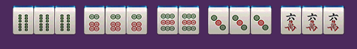
B.将将胡：玩家手上每一张牌都为2、5、8，可碰，可杠，可自摸，不放炮
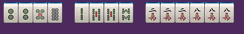
C.清一色：玩家手上每一张牌为筒、索、万任意门，乱将，可碰，可吃，可自摸，可放炮；
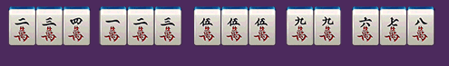
D.七小对：玩家手上胡牌时，任意七对牌，不能下坎碰；（可点炮）
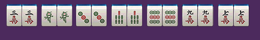
E.豪华七对：玩家手上胡牌时，手中任意3对，另外有两个四张一样的牌，在七小对的基础上再加番；（可点炮）
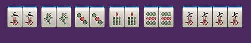
F.双豪华七对：玩家手上胡牌时，手中任意3对，另外有两个四张一样的牌，在豪华七对基础上加番；（可点炮）
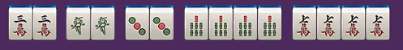
G.海底：最后一张牌为海底。海底胡牌，至少为大胡，需要根据当时牌型决定是（平胡边大胡，大胡变加番）；
湘阴麻将可海底可漫游，听牌者可有摸海底权利，如果第一玩家不要海底，第二玩家才可要，依次类推；
H.海底炮：如果甲玩家要了海底，而又没有胡牌，乙玩家没有得到海底牌，而又可以胡这样牌，即乙玩家胡牌，甲玩家放炮。同样如果丙丁玩家胡牌则为通炮；
I.杠上开花：玩家有四张一样的牌，即可选择开杠（听牌情况下）。开杠要补2张牌，两张任意一张牌被开杠者胡则为杠上开花（平胡算大胡，大胡则加番，两张都胡累加算）；
注：开杠即为开骰，开骰之后哪对应点数的一墩牌（2张）骰子点数如果点数大于牌墩数则按最小点数，如果最小点数大于牌墩数，则开骰失败，不发牌给开骰者，开骰者牌不能在动。如果牌墩数只剩下最后一墩，则不能开骰
J.抢杠胡：胡别人明杠的牌，即在对手碰牌后摸到最后第四张相同的牌要明杠补张时，可以抢胡杠胡；（暗杠和放杠、不能抢杠，只能是明杠补张情况）（平胡变大胡，大胡变加番）；
K.杠上炮：如果开杠者掷骰子摸出的牌，开杠者如不能胡而其他玩家可以胡属于杠上炮（平胡变大胡，大胡变加番）；
三、特别说明：
1.湘阴麻将中，番数=倍数；
2.湘阴麻将不分庄闲，基本分数小胡1分，大胡5分起；
3.大胡不封顶，即可番上番（5*2^(n-1)次方算法）；
①碰碰胡&将将胡：（2番：5*2=10分）②七小队&清一色：（2番：5*2=10分）
③豪华七对：（2番：5*2=10分）
④豪华七对&清一色：（4番：5*2*2=20分）
⑤四碰单调（碰碰胡&全求人）&清一色：（4番：5*2*2=20分）
⑥四碰单调&将将胡：（4番：5*2*2=20分）
⑦四碰单调&将将胡&海底胡：（8番：5*2*2*2=40分）
⑧杠上花/杠上炮：如果掷骰子后摸出2张牌都可以胡，就算（胡牌之和）（杠上炮则按开杠玩家手中牌算，进多少出多少）小胡变大胡（1番：5分）；大胡变加番（2番:5*2=10分）
⑨抢杠胡:1番：5分：
⑩海底胡/炮：（海底炮则按要海底牌的玩家手中牌算，进多少出多少）小胡变大胡（1番：5分）；大胡变加番（2番:5*2=10分）
4.通炮：即几个玩家可胡同一张牌，此牌即为通炮，湘阴麻将允许一炮多响，下一把庄家为放炮方；
通炮情况，按胡牌玩家手牌算分，中鸟1/5/9则翻倍，其他的只在原基础上加一个大番的分数（小胡不存在放炮的情况）；
杠上炮的情况下，需要分情况算分：
①两张杠出的牌，都能胡，则计算2个大番，然后按每张牌的胡牌人数计算分数
②只能胡其中一张，则计算一个大番，然后按胡牌人数来计算分数
③1接炮，则一个人分数全拿，2人接炮，则该张牌的分数评分，3人接炮，则中鸟的玩家多拿一番
5.杠（杠牌后：流局不流杠，有杠就有分，不与中鸟个数相乘，开杠拿（2张牌），补张拿（1张牌））
①杠：自己抓到3张相同的牌，其他玩家打出1张相同牌，则打出该牌的玩家出2分，杠牌玩家进2分；
②明杠：自己碰牌后，自己又摸到相同的牌即可开杠/补张，其他三家每人出1分，杠牌玩家进3分；
③暗杠：自己抓到4张相同的牌，轮到自己摸牌后，可以开杠/补张，属于暗杠，其他三家各出2分，杠牌玩家进6分；
④补张与开杠
A.明杠补张胡牌算自摸，按当前牌型算分，亦有可被其他玩家抢杠胡；
B.补张从最后一叠牌的上张拿起，一次拿一张，不可随意选择；
C.开杠不能被抢，开杠后可以胡牌/放炮，优先开杠者先胡；
D.如果只剩下最后一张海底牌、其他玩家不能杠和补张，只能选择要或者不要海底；
6.过手禁胡
一轮牌内，如果B打出一张牌，商家A可以胡牌但不能胡，即漏胡了，接下来CD同一轮打出B同一张牌，因为没有过手，A不准胡。必须A吃碰杠摸牌后自动解除；
7.庄家分配
①第一局创建房间者为庄家
②以后谁胡牌，则为下一局的庄家
③如果出现通炮的情况，则放炮的玩家为下一局庄家
④如果有人要海底，最后没有胡牌则要海底的玩家下局为庄家
⑤如果4个玩家都不要海底牌，则下一轮庄家为第一个可选择海底牌的玩家
8.计算规则
小胡： 自摸 1分*3=3分，不能接炮（除杠上炮、抢杠胡、海底炮外，参考3.4算分）
大胡： 自摸 5分*3=15分，可放炮5分；（参考3.4算分）
9.扎鸟规则
在胡牌之后，叫胡的一家（胡牌的玩家）按顺序摸1/2张牌，为鸟;
鸟的点数从本轮庄家逆时针开始计算；
如果命中胡牌者或点炮者，则叫中鸟；
如果玩家海底胡牌，则直接以海底牌为鸟牌算；
中鸟算法：扎中1只鸟为2倍，（默认1只鸟）
胡牌者：自摸扎鸟1/5/9为“全中”，2/6中下家，3/7中对家，4/8中上家；
10.最终得分：胡牌扎鸟后得分+杠分